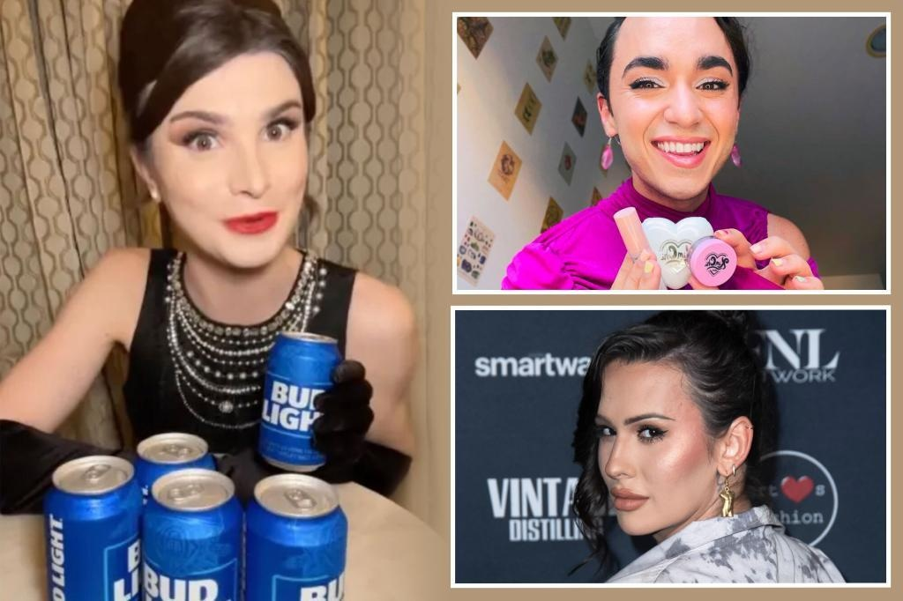

Trans influencers find it harder to get deals after Bud Light's Dylan Mulvaney fiascoJust two months ago, transgender influencer Dylan Mulvaney was flying high with endorsements from Bud Light, Nike and Maybelline, to name a few. Hot off her “365 Days of Girlhood” journey on social media, she was also enjoying an elaborate musical event staged at the Rainbow Room in her honor. That was then. But now, after the backlash against Bud Light’s decision to partner with Mulvaney on social media and feature her face on beer cans, other trans influencers say they’re feeling the heat as well. Some told The Post that, at a time when they are usually in high demand — the period leading up to Pride Month in June — brand partnership offers are drying up. Rose Montoya, who has 1 million followers on TikTok and Instagram, said she’s noticed a big drop-off in the number of deals she’s been offered. Prior to Pride Month last year, Montoya — a Seattle University graduate who bills herself as a content creator, trans advocate, model and actress — was getting up to 100 brand partnerships thrown her way. Now, she said, it’s been reduced to a trickle of maybe 12 or so offers. “Last year was my best yet,” Montoya, 27, told The Post. “I had everything — skincare brands, TV networks, advocacy groups, lots of start-ups. They all reached out. Now I’m not hearing from them.” While she noted that “the market has also become over-saturated with influencers since 2000,” Montoya added that “the average queer creative makes all their money in June —enough to live on for the rest of the year. And the fact that there’s been a chill probably isn’t helped by the whole Bud Light thing.” Montoya said that she can get up to $15,000 for a brand partnership. Some of her contracts are for six months at a time, and she hopes to renew one of those soon. “One reason I still feel optimistic is that one or two deals can keep me going a long time,” she said. “I think there was a huge overreaction to the Bud Light thing and it’s part of the puzzle.” Montoya mentioned other trans-influencer friends who are hurting for deals post-Mulvaney but only one, influencer Elle Deran, wanted to comment publicly. Deran, an LA-based non-binary actor, singer and content creator, was hesitant to slam the Bud Light fiasco for the slowdown in brand deals she’s been offered but said she wishes the company had handled things differently. She said her manager handles the nuts and bolts of her partnership deals, so she doesn’t know exactly how much the offers have dried up — but confirmed that there’s been a reduction. “Bud Light lost their conservative demographic but, in their damage control response, they also alienated and lost their queer supporters,” Deran told The Post. “I’ve noticed a shift for sure in the deals I’m being offered. But I hope once Pride Month is upon us, these companies will remember that the LBGTQ+ community has money and power and needs them.” Mulvaney, 26, who transitioned from male to female beginning in March 2021, has reportedly earned more than $1 million dollars from endorsements including fashion and beauty brands Kate Spade, Ulta Beauty, Haus Labs and CeraVe, as well as Crest and InstaCart. She’s also gained more 10 million followers on TikTok. In March, she appeared on “The Drew Barrymore Show,” where the “Charlie’s Angels” star famously knelt before Mulvaney and embraced her, and Mulvaney met with President Biden at the White House last fall. Then Bud Light featured her in an Instagram post and Mulvaney’s world exploded, only to quickly implode. Bud Light recently suffered its fifth straight week of worsening sales drops since the Mulvaney controversy began — stoking doubts about whether the mega-brand can recover as the crucial summer beer-drinking season begins. Nationwide retail sales of Bud Light sales dropped 23.6% versus a year ago during the week ended May 6 — slightly worse than the 23.3% decline for the week ended April 29, according to data from Bump Williams Consulting and Nielsen IQ data. Mulvaney said in a recent podcast with trans swimmer Schuyler Bailar that she was “having trouble sleeping” over the backlash. She’s spoken rarely since her partnership with Bud Light blew up but said she hoped that those dissing her will one day be able to see the “beauty humanity [and] importance of identity. “Now there are hundreds of thousands of people who don’t like me,” Mulvaney admitted, but added that it helped her with history of what she called “people-pleasing.” The LGBTQ community has denounced Anheuser-Busch for backing away from the promotion and not defending its decision to align with Mulvaney. Anheuser-Busch placed two executives — Alissa Heinerscheid, the vice president of marketing, and her boss, Daniel Blake — on leave last month. Earlier this month, the top executive of Bud Light’s parent company AB InBev, Michel Doukeris, disavowed the Mulvaney scheme. “We need to clarify the facts that this was one can, one influencer, one post and not a campaign,” Doukeris told investors during an earnings call. |
 |